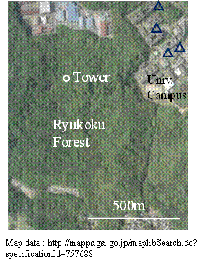
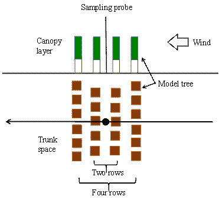

International Journal of Environmental Pollution and Remediation (IJEPR)
ISSN: 1929-2732

Volume 3 - Year 2015 - Pages 33-41
DOI: 10.11159/ijepr.2015.005
Analysis of Air Purification in a Woodland by Field Observation and Wind Tunnel Experiment
Yoichi Ichikawa1, Syunsuke Mukai1, Masahiro Nishimoto2, Hideaki Mouri3, Akihiro Hori4
1Ryukoku University, Faculty of Science and Technology
1-5 Yokotani, Setaoe-cho, Otu, Shiga 520-2194, Japan
ichikawa@rins.ryukoku.ac.jp
2Polytech Add, Inc.
RBM Tsukigi Square 3F, 1-18-8 Shintomi, Chuo-ku, Tokyo, 104-0041, Japan
nishimoto@polyadd.co.jp
3Meteorological Research Institute
1-1 Nagamine, Tsukuba, Ibaraki 305-0052, Japan
hmouri@mri-jma.go.jp
4Meteorological and Environmental Sensing Technology Inc.
1-1 Nagamine, Tsukuba, Ibaraki 305-0052, Japan
fudo@mri-jma.go.jp
Abstract - As part of a comprehensive study on the harmonious coexistence of humans and nature focusing on woodland, we evaluated the role of the Ryukoku forest in air purification. The Ryukoku forest, located at Seta Hill in Shiga Prefecture, Japan, is composed of a mixture of conifer and deciduous trees. There are two mechanisms by which forest air is purified: the deposition of air pollutants onto leaf surfaces and the effect of a tree wind break (air pollutant break). We measured vertical distributions of the nitrogen dioxide (NO2) concentration inside and outside the Ryukoku forest using passive samplers attached to a 25-m-tall observation tower and to neighbouring university campus buildings, respectively. Wind tunnel experiments that treat atmospheric dispersion among model trees and cannot consider the effect of deposition were conducted to evaluate the effect of a tree wind break. The observed NO2 concentration at the forest floor showed a 30 percent decrease compared with that above the canopy top. The results of the wind tunnel experiment for four parallel rows of model trees showed a decrease in the concentration of air pollutants inside the forest comparable to the observation in the Ryukoku forest. However, the decrease in the concentration of air pollutants from the top of the canopy to the forest floor was not observed in the wind tunnel experiment. It is deduced that the low NO2 concentration inside the forest compared with that outside the forest is mainly due to the tree wind break effect and that the variation in the NO2 concentration with the height from the canopy top is mainly due to the deposition of air pollutants onto leaf surfaces.
Keywords: Air purification, Forest, Wind tunnel experiment, Nitrogen dioxide.
© Copyright 2015 Authors - This is an Open Access article published under the Creative Commons Attribution License terms. Unrestricted use, distribution, and reproduction in any medium are permitted, provided the original work is properly cited.
Date Received: 2014-11-25
Date Accepted: 2015-06-05
Date Published: 2015-06-19
1. Introduction
It is well known that forests contribute to improving the atmospheric environment because they play a crucial role in air purification by the uptake and deposition of air pollutants. Nowak et al. [1] revealed that trees and forests remove substantial amounts of pollution and can produce substantial health benefits, particularly within urban areas. Field observation studies of forest air pollutants can be found in the literature. For example, Fontan et al. [2] measured vertical profiles of the ozone concentration in a pine forest in the Landes region of southwest France. A positive gradient of the ozone concentration at the vegetation level and at the ground level was observed in relation to a temperature inversion. Lamaud et al. [3] measured ozone fluxes at the same site as Fontan et al. and found that the ozone uptake by the understorey of short vegetation accounts for a significant portion of ozone deposition. Cox et al. [4] measured vertical ozone profiles in a 15.7-m-high forest canopy at the University of New Brunswick woodlot in Fredericton, Canada, and found a 50 percent reduction in the ozone concentration from the canopy top to the breast height. Krzyzanowski [5] conducted a similar observation in a 13-m-high forest canopy in the Lower Fraser Valley, British Columbia, Canada, and found a 31 to 47 percent reduction in the ozone concentration from the top of the canopy to the forest floor. Utiyama et al. [6] found in a 15-m-high canopy of a red pine forest situated in central Japan that the ozone concentration decreased by 35 percent from the top of canopy to the forest floor in autumn, during which no ozone formation was found to occur in the trunk space. Launiainen et al. [7] measured ozone fluxes above and within a boreal Scots pine forest in Southern Finland, where the mean canopy height was 15 - 16 m, and discussed ozone removal by the canopy and forest floor. Savi et al. [8] found, in a 14-m-high evergreen Holm oak forest located within the Castelporziano Estate, Italy, that the forest canopy was a net sink of ozone.
It is important to accumulate observation data at various forest sites while considering vegetation and meteorological conditions. In this study, as part of a comprehensive study on the harmonious coexistence of humans and nature focusing on woodland, we measured the distributions of the nitrogen dioxide (NO2) concentration inside and outside the Ryukoku forest located at Seta Hill in Shiga Prefecture, Japan. Ozone is sometimes photochemically formed in the trunk space owing to the emission of hydrocarbons from trees [6]. Since NO2 is much less reactive than ozone, the observation of NO2 is useful for studying removal mechanism of air pollutants in forests.
There are two mechanisms by which forest air is purified: the deposition of air pollutants onto leaf surfaces and the effect of a tree wind break (air pollutant break). A wind tunnel experiment to determine the effect of the canopy layer on flow turbulence was conducted by Pietri et al. [9]. They used conical model trees made of metal and fine green foam, and quantitatively obtained the wind break effect in the case where the ratios of the tree spacing to tree height were 1, 1.5 and 2. Gromke et al. [10, 11] investigated the effect of trees on the dispersion of pollutants by means of a wind tunnel experiment and a computational fluid dynamics simulation. They placed one or two rows of a fibrous wadding material in street canyon models to simulate avenues of trees. A tracer gas was emitted in the street canyon or between the model trees. Al-Dabbous et al. [12] conducted field measurements to investigate the influence of roadside vegetation barriers on the movement of air pollutants. Janhäll [13] reviewed the influence of urban vegetation on the deposition and dispersion of air pollutants and introduced some studies on vegetation barriers in street canyons. However, no studies on the effect of trees on the dispersion of air pollutants transported from outside a forest have been reported to the best of our knowledge. We therefore conducted wind tunnel experiments to elucidate the effect of trees on air pollutant break.
2. Field Observation
Seta Hill, Shiga Prefecture, Japan, is near the Kansai metropolitan area, which includes Osaka and Kyoto. Shiga prefecture is almost located in the centre of Japan and Seta Hill is located at the southwest end of Shiga prefecture as shown in Figure 1. Seta Hill includes the Ryukoku forest, a 38 ha woodland area primarily composed of konara oak (Quercus serrata, deciduous), longstalk holly (Ilex pedunculosa, broad-leaved evergreen), Japanese red pine (Pinus densiflora, coniferous) and hinoki cypress (Chamaecyparis obtusa, coniferous). The study area is the Ryukoku forest and the neighbouring Ryukoku University campus, located 150 - 160 m above sea level at N35.0 deg., E135.9 deg., approximately 15 km east of central Kyoto. The Ryukoku forest and the surrounding area are also shown in Figure 1. There is a highway at a distance of about 1 km from the university campus but no other major stationary emission sources of air pollutants. The area surrounding the university campus can be considered to be a typical suburb. A 25-m-tall observation tower was set up in the forest. The tower has a fetch longer than 300 m from the nearest forest edge. The height of the canopy top varies with the season. In this paper, the height of the canopy top is assumed to be 15.6 m, which is the highest observation point of NO2 in the canopy layer. The leaf area index (LAI) of the canopy at the observation tower was measured by an optical sensor (LI-COR LAI-2000 plant canopy analyzer). The LAIs estimated from measurements made above the canopy and at ground level were 4.2 and 3.5 in autumn and winter 2013, respectively.
NO2 was collected using an Ogawa passive sampler [14], and nitrite ions were extracted from the filter of the passive sampler. The NO2 concentration was determined from the nitrite ion concentration analysed using a spectrometer (Shimadzu UV2550). Two filters were placed in the body of the passive sampler. We averaged the NO2 concentrations analysed from each filter. The difference in the NO2 concentrations between the two filters was approximately 3 percent of the average and 185 out of 193 sample pairs showed differences within 10 percent of the average. Bytnerowicz et al. [15] observed the distributions of ozone and nitrogen dioxide in 32 forests sites in central Europe using passive samplers. Passive samplers have been proven to be useful tools for determining the temporal and spatial variation when studying the exposure of the forests to gaseous air pollution [16].

Twelve passive samplers were attached to the observation tower at heights of between 0.1 and 25.1 m. Each measurement was performed for 3 days in almost every month from January to December 2013. Furthermore, the vertical distribution of the NO2 concentration outside the Ryukoku forest was measured at heights of between 1.5 and 30 m using passive samplers attached to university campus buildings at the locations shown by triangles in Figure 1. Wind measurements with a vane anemometer (Vector Instruments W200P) were performed at a height of 5 m using the observation tower in the Ryukoku forest and at a height of 6 m using a mast in the university campus.
3. Wind Tunnel Experiments
Wind tunnel experiments were conducted using facilities at the Meteorological Research Institute of Japan Meteorological Agency. The test section of the wind tunnel was 18 m long, 3 m wide and 2 m high. A grid and rods were placed at the entrance to the test section and 10 mm cubes were placed at the floor of the test section to produce a suburban atmospheric boundary layer. Experiments were conducted with a flow velocity of 5 m/s at the boundary layer height. The height of the boundary layer and the wind-profile power-law exponent were 280 mm and 1/7, respectively. The streamwise turbulence intensity was more than 10 percent near the surface.
Figure 2 shows wooden model trees, 10 mm cubes and a sampling probe for tracer gas. Two or four parallel rows of model trees at 100 mm intervals were set up. In the case of four parallel rows, the trunks of the trees were arranged in a staggered manner as shown in the figure. One model tree was 10 mm wide and 12 mm thick, and comprised a 75-mm-high canopy layer and a 25-mm-high trunk space. Thirty-six holes of 6 mm diameter were bored in the canopy layer with an opening ratio of 14 percent. A wire gauze of 12 meshes per inch was used to simulate the canopy.
Pure propane was used as the tracer. The tracer gas was released parallel to the wind tunnel floor using a gamma-type pipe of 2 mm internal diameter, collected using a sampling probe and analysed using a flame ionisation detector (Beckman Industrial Model 400). The sampling probe was positioned at the centre of the model trees, as shown in Figure 2. The release point of the tracer was situated at a distance of 2000 mm from the sampling point on the windward side. The release heights were 0, 30, 60, 90, 120, 150 and 190 mm. Measurements of the tracer gas concentration were carried out for both flat terrain and model trees.
The measurement was repeated two times for the flat terrain to examine the accuracy of concentration measurements. The differences in the standard deviations of lateral and vertical dispersions were 3 percent and 1 percent of the average of the two measurements, respectively.
The standard deviation of lateral dispersion for flat terrain was 75 mm at a distance of 2000 mm from the release point. The total width of model trees had to be much larger than 75 mm in order to obtain similar dispersion phenomena among the model trees. In our wind tunnel experiment, five or six model trees per row were set up and the total width of model trees was 500 or 600 mm. Vertical profiles of the concentration of tracer gas are analysed with respect to the height normalized by canopy height. It can therefore be considered that the number and height of the model tree do not affect the interpretation of the dispersion phenomena in this study.

We discuss here the influence of the opening ratio of a model tree on the dispersion characteristics among model trees. The opening ratio is determined from various factors such as the size of the model tree, number of holes and the diameter of holes. The opening ratio itself is more important than each single factor. In our study, the size of each model tree and the hole diameter were fixed. Figure 3 shows the effect of the number of holes on the vertical profiles of the tracer gas. The number of parallel rows of model trees was two and the release height of the tracer gas was 60 mm. The number of holes and the corresponding opening ratio are shown in the legend. The concentration of the tracer gas below the canopy top for 36 holes was approximately 20 - 30 percent higher than those for zero and 6 holes. The zero hole corresponds to an impermeable canopy layer and is unrealistics. There is a difference of 10 percent between the results for 36 holes and 12 (or 18) holes. The model tree with 36 holes was used in our wind tunnel experiment. Comparison between the results of the wind tunnel experiment using model trees with 36 holes and those of the field observation is discussed later with reference to Figure 9.
The flow fields were measured by laser Doppler velocimetry (LDV) combining an argon laser (Spectra Physics model 2017) and a Burst Spectrum Analyser (Dantec Dynamics F60), and visualised by the smoke wire technique. In this technique, smoke is generated by heating a glycerine-covered nickel-chromium wire of 0.2 mm diameter. Since LDV measurements and smoke visualisations under the canopy cover were very difficult, flow fields were acquired without the canopy cover.
4. Results
Figure 4 shows the observed NO2 concentration plotted against the height from the forest floor in the Ryukoku forest. The observed NO2 concentration decreased from the top of the canopy to the forest floor throughout the year. The average ratio of the NO2 concentration at the forest floor to that above the canopy top was approximately 70 percent. The decrease in the NO2 concentration in the forest is due to not only the deposition onto leaf surfaces but also the effect of a tree wind break. Since wind tunnel experiments cannot consider the effect of deposition, their results show the contribution of the effect of trees on air pollutant break.
A forest consists of the canopy cover, canopy layer and trunk space. Figure 5 shows a wind tunnel experimental result showing the effect of the canopy cover on the vertical profile of the tracer gas. The number of parallel row of model trees was four and the release heights of the tracer gas were 60 and 120 mm. The opening ratios in the cases of canopy cover and no canopy cover were 27.9 and 100 percent, respectively. Similar results were obtained regardless of the existence of a canopy. This is because the tracer gas mainly flows in the spaces between trees through holes in the canopy layer and trunk space.
The result of flow visualisation using the smoke-wire technique is shown in Figure 6. The movement of smoke is sketched by the thick arrows. The thin arrows show wind vectors around the height of the canopy top at the centreline of the model trees. The wind velocity at the canopy height was very low and the winds at and below the canopy height blew in opposite directions. Figure 6 shows that less smoke flowed in the spaces between the trees through the canopy cover, although there were instantaneous in- and outflows of smoke. Gromke et al [17] studied the dispersion phenomena in a wind tunnel model of a street canyon and were unable to find a substantial difference in the flow fields between impermeable and permeable tree crowns. Hereafter we will analyse the results of wind tunnel experiments using a canopy cover.
The observed vertical NO2 profile outside the Ryukoku forest (i.e., at the University campus) was almost uniform as shown in Figure 7. It is considered that this is because exhaust gases released from various heights are transported to the forest. The following integrated concentration was therefore estimated from the results of the wind tunnel experiment for each release height:
Where IC(z) is the integrated concentration of the tracer gas at height z, C(H, z) is the concentration of the tracer gas at height z for the release height H, w(H) is a weighting function and H0 is the maximum release height.
In the wind tunnel experiments, vertical distributions of the tracer gas concentration for flat terrain were obtained for various release heights. A uniform distribution corresponding to the observed NO2 concentration outside the forest was obtained by integrating the vertical concentration distributions for the flat terrain. The values of w(H) in Eq. (1) were chosen so that the uniform distribution outside the forest was obtained. The value of w(H) ranged from 1 to 1.6. Similarly, Eq. (1) was used to estimate the vertical concentration distribution of the tracer gas among the model trees. w(H) for the model trees was the same as that for the flat terrain.
The wind tunnel experimental results for four parallel rows of model trees are shown in Figure 8. This figure shows the vertical distribution of the tracer gas for various release heights. An increase in the tracer gas concentration above the canopy top and a tendency for the tracer gas concentration to be uniform below the height of the canopy top are observable. These characteristics are due to the upward flow that occurred on the windward side of the model trees and strong turbulence among the model trees. Another characteristic is the appearance of inflection points at a height of 100 mm, i.e., the canopy height, except for the release height of 190 mm, indicating that there is little exchange of the tracer gas throughout the canopy cover.
The integrated concentration of the tracer gas obtained using Eq. (1) is shown in Figure 9. The concentration was normalised by the tracer gas concentration for flat terrain (or outside the forest) at the height of the canopy top (ztop). The vertical axis was normalised by ztop. The solid lines were obtained from the observation in the Ryukoku forest, while the broken lines were obtained from the wind tunnel experiments. In the figure, the observed results in the Ryukoku forest show the annual average and the results for the summer period. The results of the wind tunnel experiments for two and four parallel rows of model trees are also included. The concentrations of the tracer gas below the canopy top for the cases of two and four parallel rows decreased by 5 and 30 percent, respectively, compared with that for flat terrain. The annual average of the observed vertical NO2 profile lay between the wind tunnel experimental results for two and four parallel rows. The wind tunnel experimental results indicated a uniform vertical distribution in the canopy layer and trunk space, while the observed result showed a decrease in the NO2 concentration from the canopy top to the forest floor. It is deduced that the decrease in the tracer gas concentration among the model trees that appeared in the wind tunnel experiment corresponds to the tree wind break effect, while the concentration gradient appearing in the Ryukoku forest is due to the effects of the plant uptake and deposition of air pollutants. The observed vertical NO2 profile for the summer period is similar to the wind tunnel experimental result for four parallel rows.
A comparison of the wind velocity observed in the Ryukoku forest with that measured in the wind tunnel is shown in Figure 10. The ratio of the wind velocity inside the Ryukoku forest to that at the campus varied with the season. The result for four parallel rows in the wind tunnel was almost coincident with the results observed from summer to the beginning of autumn when the amount of biomass was large and the LAI was high in the forest.
5. Conclusion
A decrease in the NO2 concentration from the top of the canopy to the forest floor was observed in the Ryukoku forest at Seta Hill in Shiga Prefecture, Japan. The annual average of the ratio of the NO2 concentration at the forest floor to that at the canopy top was approximately 70 percent. Similar decreases in the ozone concentration in the forest canopy layer have previously been observed and discussed from the viewpoint of deposition on leaf surfaces, uptake by vegetation and chemical destruction. The decrease in the air pollutant concentration in forests is due to not only the deposition of air pollutants onto leaf surfaces but also the effect of a tree wind break. Wind tunnel experiments cannot consider the effect of deposition, and can treat atmospheric transport and dispersion in model trees. This study dealt with the decrease in the air pollutant concentration due to the fluid dynamic effect of a wind break through wind tunnel experiments.
The results of the wind tunnel experiment for four parallel rows of model trees showed a decrease in the concentration of air pollutants inside the forest comparable to the observation in the Ryukoku forest. This is probably because a similar wind break effect was found in the wind tunnel experiment and the observation. However, the decrease in the concentration of air pollutants from the top of the canopy to the forest floor was not observed in the wind tunnel experiment. From the above results, it is deduced that the low NO2 concentration inside the forest compared with that outside the forest is mainly due to the tree wind break effect and that the variation in the NO2 concentration with the height from the forest floor is mainly due to the deposition of air pollutants onto leaf surfaces.
Since the wind tunnel experiments were conducted using simple model trees, the effect of the canopy cover on the inflow of air pollutants into the forest was examined. There were no substantial differences in the concentration distribution of the tracer gas between the cases of model trees with and without the canopy cover. Other configurations of model trees remain to be explored in order to simulate the transport and dispersion of air pollutants in the Ryukoku forest in a more rigorous manner. This will be the purpose of our future work.
Acknowledgements
This work was supported by JSPS KAKENHI Grant Number 25340018 and Ryukoku University Short-Term Research Fellowship. The authors are indebted to Toshimasa Yagi of Meteorological and Environmental Sensing Technology Inc. for his contribution to the flow visualisation in the wind tunnel and to Shiori Hashimoto for her assistance in the wind tunnel experiment.
References
[1] Nowak D. J., Hirabayashi S., Bodine A., Greenfield E., "Tree And Forest Effects On Air Quality And Human Health In The United States," Environmental Pollution, vol. 193, pp. 119-129, 2014. View Article
[2] Fontan J., Minga A., Lopez A., Druilhet A., "Vertical Ozone Profiles in a Pine Forest," Atmospheric Environment, vol. 26A, pp. 863-869, 1992. View Article
[3] Lamaud E., Carrara A., Brunet Y., Lopez A., Druilhet A., "Ozone Fluxes Above And Within A Pine Forest Canopy In Dry And Wet Conditions," Atmospheric Environment, vol. 36, pp. 77-88, 2002. View Article
[4] Cox R. M., Malcolm J. W., "Passive Ozone Monitoring For Forest Health Assessment," Water, Air, and Soil Pollution, vol. 116, pp. 339-344, 1999. View Article
[5] Krzyzanowski J., "Ozone Variation With Height In A Forest Canopy - Results From A Passive Sampling Field Campaign," Atmospheric Environment, vol. 38, pp. 5957-5962, 2004. View Article
[6] Utiyama M., Fukuyama T., Maruo Y. Y., Ichino T., Izumi K., Hara H., Takano K., Suzuki H., Aoki M., "Formation And Deposition Of Ozone In A Red Pine Forest," Water, Air, and Soil Pollution, vol. 151, pp. 53-70, 2004. View Article
[7] Launiainen S., Katul G. G., Grönholm T., Vesala T., "Partitioning Ozone Fluxes Between Canopy And Forest Floor By Measurements And A Multi-Layer Model," Agricultural and Forest Meteorology, vol. 173, pp. 85-99, 2013. View Article
[8] Savi F., Fares S., "Ozone Dynamics In A Mediterranean Holm Oak Forest: Comparison Among Transition Periods Characterized By Different Amounts Of Precipitation," Annals. of Silvicultural Research, vol. 38, pp. 1-6, 2014. View Article
[9] Pietri L., Petroff A., Amielh M., Anselmet F., "Turbulence Characteristics Within Sparse And Dense Canopies," Environmental Fluid Mechanics, vol. 9, pp. 297-320, 2009. View Article
[10] Gromke C., Buccolieri R., Sabatino S. D., Ruck B., "Dispersion Study In A Street Canyon With Tree Planting By Means Of Wind Tunnel And Numerical Investigations - Evaluation Of CFD Data With Experimental Data," Atmospheric Environment, vol. 42, pp. 8640-8650, 2008. View Article
[11] Gromke C., Ruck B., "Pollutant Concentrations In Street Canyons Of Different Aspect Ratio With Avenues Of Trees For Various Wind Directions," Boundary Layer Meteorology, vol. 144, pp. 41-64, 2012. View Article
[12] Al-Dabbous A. N., Kumar P., "The Influence Of Roadside Vegetation Barriers On Airborne Nanoparticles And Pedestrians Exposure Under Varying Wind Conditions," Atmospheric Environment, vol. 90, pp. 113-124, 2014. View Article
[13] Janhäll S., "Review On Urban Vegetation And Particle Air Pollution - Deposition And Dispersion," Atmospheric Environment, vol. 105, pp. 130-137, 2015. View Article
[14] Ogawa and Company, Passive Sampler. Available: http://ogawausa.com/passive- sampler/. View Article
[15] Bytnerowicz A., Godzik B., Frączek F., Grodzińska K., Krywult M., Badea O., Barančok P., Blum O., Černy M., Godzik S., Mankovska B., Manning W., Moravčik P., Musselman R., Oszlanyi J., Postelnicu D., Szdźuj J., Varšavova M., "Distribution Of Ozone And Other Air Pollutants In Forests Of The Carpathian Mountains In Central Europe," Environment Pollution, vol. 116, pp. 3-25, 2002. View Article
[16] Cox R. M., "The Use Of Passive Sampling To Monitor Forest Exposure To O3, NO2 And SO2: A Review And Some Case Studies," Environmental Pollution, vol. 126, pp. 301-311, 2003. View Article
[17] Gromke C., Ruck B., "Influence Of Trees On The Dispersion Of Pollutants In An Urban Street Canyon - Experimental Investigation Of The Flow And Concentration Field," Atmospheric Environment, vol. 41, pp. 3287-3302, 2007. View Article